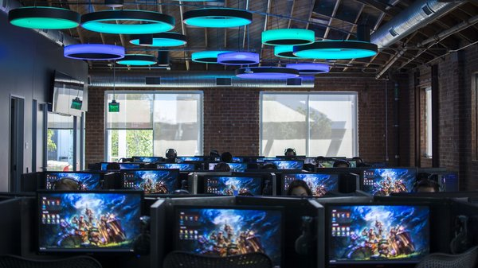

Una empresa desarrolladora y editora de videojuegos y
organizador de torneos de deportes electrónicos estadounidense con sede en West
Los Angeles, California.Esto incluye la League of Legends Championship Series,
que comprende ligas en América del Norte y Europa. En total, hay más de 100
equipos en las 14 ligas regionales de Fight Games en todo el mundo.

Los equipos compiten en el transcurso de una temporada separada en dos divisiones estacionales.
Los equipos ganan puntos de campeonato para clasificarse para dos grandes competiciones
internacionales: el Mid-Season Invitational y el Campeonato Mundial de League of Legends.
El Campeonato Mundial de Fight Games es el torneo profesional anual al final de cada temporada.